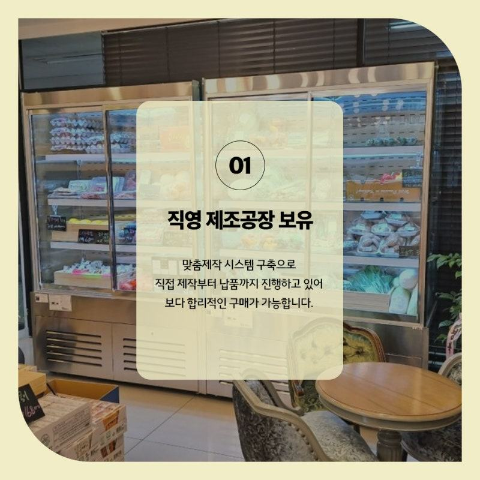
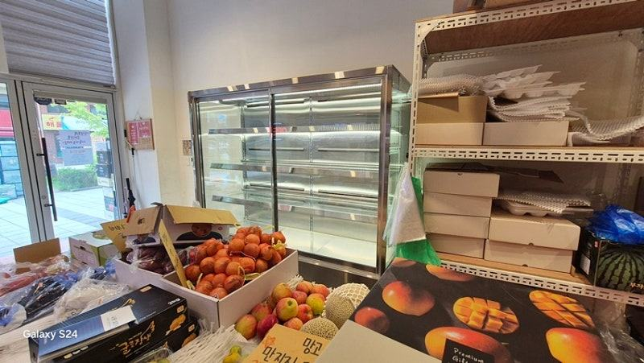
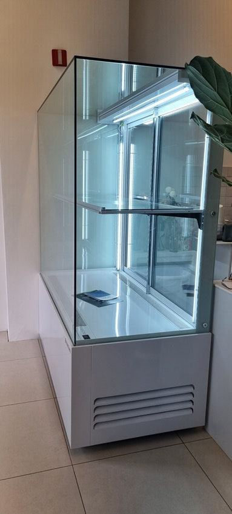
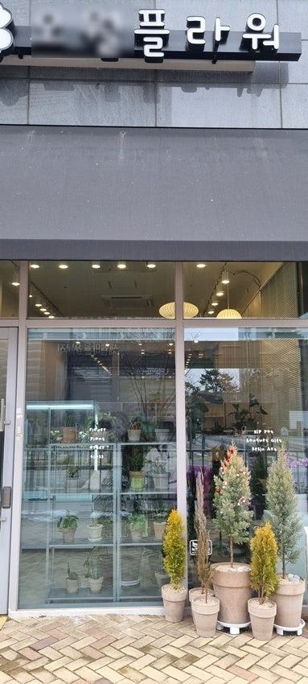
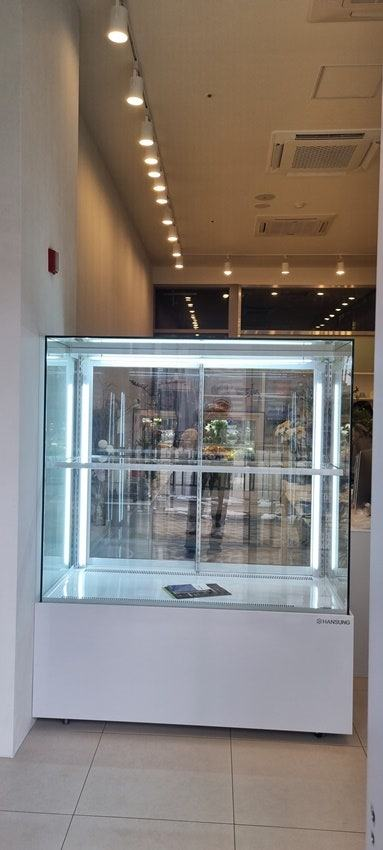

과일진열쇼케이스
과일가게 인테리어, 쇼케이스 자리부터 잡아야 하는 이유

과일가게 인테리어는 과일쇼케이스의 자리와 크기, 조명 색을 먼저 정하고 나머지 마감을 그에 맞추는 순서가 안전합니다. 쇼케이스는 전원·배수·열 배출 조건이 따라붙는 설비라, 인테리어를 다 끝낸 뒤 들이면 다시 뜯어야 하는 일이 생깁니다.
안녕하세요. 과일 매장에 맞는 냉장 진열장을 직접 설계하고 만드는 한성쇼케이스입니다.
과일가게 오픈을 앞둔 사장님들과 상담하다 보면 인테리어 업체와 먼저 계약하고, 공사가 거의 끝난 뒤에 쇼케이스를 알아보시는 경우가 꽤 많습니다.
그때 가서야 콘센트 위치가 안 맞거나, 생각한 크기가 벽 사이에 들어가지 않는다는 걸 알게 되시죠.
과일은 색으로 파는 상품입니다. 같은 사과, 같은 딸기라도 어떤 진열장에 어떤 빛을 받고 놓이느냐에 따라 손님 눈에 들어오는 인상이 달라집니다.
그래서 과일가게에서는 쇼케이스가 가구가 아니라 인테리어의 중심축 역할을 합니다.
오늘은 과일가게 인테리어를 계획할 때 쇼케이스를 왜 먼저 정해야 하는지, 무엇을 순서대로 결정하면 되는지 정리해 드리겠습니다.
1. 쇼케이스가 공사 순서를 정하는 이유
냉장 쇼케이스는 놓기만 하면 되는 진열대가 아닙니다. 전용 전원이 필요하고, 기계실에서 나오는 열이 빠져나갈 공간이 있어야 하며, 제품에 따라 물이 빠질 자리도 생각해야 합니다.
이런 조건은 벽체와 바닥 마감 전에 반영해야 비용이 덜 듭니다.
또 과일가게는 입구 쪽 매대와 안쪽 냉장 진열장의 높이 차이가 매장 분위기를 좌우합니다. 쇼케이스 높이와 깊이가 정해져야 그 앞 평대, 뒤쪽 선반, 계산대 위치가 자연스럽게 따라옵니다.
결국 쇼케이스 도면이 먼저 나와야 인테리어 업체도 정확한 치수로 마감을 잡을 수 있습니다.
- 쇼케이스 자리의 폭·깊이·천장 높이를 먼저 실측해 두세요.
- 전용 콘센트 위치를 인테리어 도면에 표시해 달라고 하세요.
- 기계 열이 빠질 뒷면·측면 여유를 비워 두세요.
2. 과일 색을 살리는 조명과 마감
과일 매장은 빨강, 노랑, 초록이 한꺼번에 섞여 있습니다. 매장 전체 조명이 너무 누렇거나 쇼케이스 내부 조명이 너무 차가우면 과일 색이 탁해 보입니다.
내부 조명 색은 주력 과일의 색을 기준으로 고르고, 매장 천장 조명과 함께 비교해 보시는 게 좋습니다.
프레임 색상도 마찬가지입니다. 원목 느낌의 따뜻한 마감은 산지 직송 분위기를, 화이트나 블랙 마감은 선물용 과일 매장 분위기를 냅니다.
매장 콘셉트와 쇼케이스 외관이 따로 놀지 않도록 인테리어 시안과 쇼케이스 디자인을 한자리에 놓고 보시길 권합니다.


3. 습도까지 고려한 진열 구성
과일은 수확한 뒤에도 호흡을 계속합니다. 쇼케이스 안이 너무 습하면 표면에 물기가 맺혀 조직이 물러지고, 너무 건조하면 수분이 빠져 쭈글쭈글해지고 윤기가 사라집니다.
손님은 그 차이를 바로 신선하지 않다고 느끼시죠.
그래서 냉장 칸에 둘 과일과 상온 평대에 둘 과일을 미리 나눠 두는 것이 인테리어 계획의 일부가 됩니다.
냉장이 필요한 컷과일·베리류 비중이 크다면 냉장 진열 면적을 넉넉히, 박스 판매 위주라면 상온 평대를 넓게 잡는 식입니다.
- 냉장 진열이 필요한 품목 비중을 먼저 정하세요.
- 컷과일을 판다면 소분 용기 높이에 맞춰 단 높이를 잡으세요.
4. 좁은 매장일수록 맞춤 규격이 유리한 이유
기성 규격 쇼케이스를 들이면 벽과 기둥 사이에 애매한 틈이 남는 경우가 많습니다. 과일가게는 박스 재고를 쌓아 둘 공간도 필요해서 이런 틈 하나가 꽤 아깝습니다.
매장 실측에 맞춰 쇼케이스 규격을 정하면 설치 크기를 줄이면서도 진열 면적을 지킬 수 있고, 남는 자리를 재고 보관이나 손님 동선으로 돌릴 수 있습니다.
디자인 단계부터 사장님이 직접 의견을 내실 수 있어서 인테리어 업체와 조율하기도 수월합니다.
체크리스트
- 쇼케이스 자리 실측과 전용 전원 위치
- 기계 열 배출 공간 확보 여부
- 주력 과일 색에 맞춘 내부 조명 색
- 냉장 진열 품목과 상온 평대 품목 구분
- 프레임 색상과 매장 인테리어 시안 비교
현장에서 자주 보는 경우: 쇼케이스를 줄여 공간을 만든 과일 매장
과일쇼케이스 상담을 하다 보면 신규 창업 사장님만큼이나 기존 쇼케이스를 교체하려는 사장님도 많습니다.
공통된 고민은 신선도를 지키면서 매장 인테리어와 어울리게 하고 싶다는 것이었습니다.
이런 매장은 매장 규모에 맞춰 규격과 디자인을 처음부터 다시 잡고, 디자인 과정에 사장님이 직접 참여하는 방식으로 진행했습니다.
매장 특성에 맞춰 주문 생산으로 쇼케이스 설치 크기를 최대한 줄인 덕분에 남는 공간이 생겼고, 사장님들이 가장 반기신 부분도 바로 그 여유 공간이었습니다.
공장에서 직접 제조해 시공·설치부터 이후 A/S까지 한 곳에서 이어서 챙겼습니다.





자주 묻는 질문
인테리어 공사가 이미 시작됐는데 지금 쇼케이스를 맞춰도 될까요?
가능합니다. 다만 전원 위치와 설치 자리 치수가 확정되기 전에 상담을 받으시면 다시 뜯는 일을 줄일 수 있습니다.
현재 도면이나 실측 치수를 보내 주시면 들어갈 수 있는 구성을 먼저 확인해 드립니다.
과일쇼케이스 조명은 어떤 색이 좋나요?
매장에서 주로 파는 과일 색과 천장 조명 색에 따라 달라집니다. 한 가지 색으로 정하기보다 진열할 과일을 놓고 비교해 보신 뒤 결정하시는 걸 권합니다.
지방 매장도 설치와 A/S가 되나요?
한성쇼케이스는 전국 240여 개 A/S 센터를 운영하고 있어 지방 매장도 설치 이후 관리를 받으실 수 있습니다.
설치 일정은 인테리어 공정에 맞춰 조율해 드립니다.
매장 조건에 맞춰 만드는 한성쇼케이스
원하시는 제품 사진과 설치할 공간 사진만 보내 주셔도 매장에 맞는 구성을 추천해 드립니다.
- 전국 240여 개 A/S 전담 센터 운영
- 본사 대량 자재 매입으로 품질 대비 합리적인 가격
- 유럽제·삼성 냉각 콤프레셔 적용
- 국내 최초 쇼케이스 전문 디자이너 상주
매장 폭과 원하는 진열 구성을 알려 주세요. 실측과 견적을 안내해 드립니다.
031-986-2458